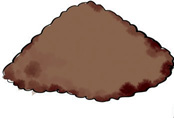
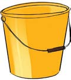
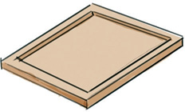
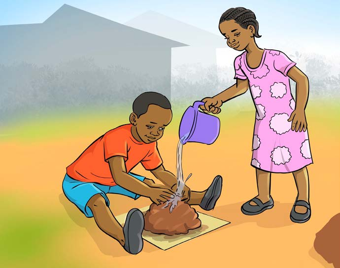

Modelling
Materials required

Clay soil for making clay soil figures

A bucket of water

A base for positioning the clay soil figure

Exercise 2
1. List down the actions being performed in the picture.
2. Why do we wet the soil before modelling?